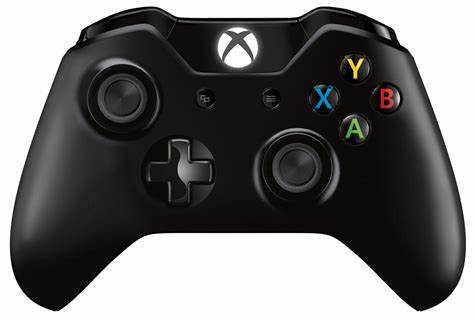

Definicja Gry
 Gra komputerowa (gra wideo[a], ang. video game) – rodzaj oprogramowania komputerowego przeznaczonego do celów rozrywkowych, bądź edukacyjnych (rozrywka interaktywna) i zazwyczaj wymagającego od użytkownika (gracza) pokonywania wyzwań wyznaczonych przez jej twórców.
Gry komputerowe mogą być uruchamiane na komputerach osobistych, specjalnych automatach, konsolach do gry, telewizorach, telefonach komórkowych oraz innych mobilnych urządzeniach, nazywanych łącznie platformami sprzętowymi.
Zadania stawiane przed graczem w grach komputerowych różnią się w zależności od gatunku i mogą polegać na przykład na rozwiązaniu zadania logicznego, eliminacji wirtualnych przeciwników czy też rywalizacji ze sztuczną inteligencją bądź innymi graczami (gra wieloosobowa).